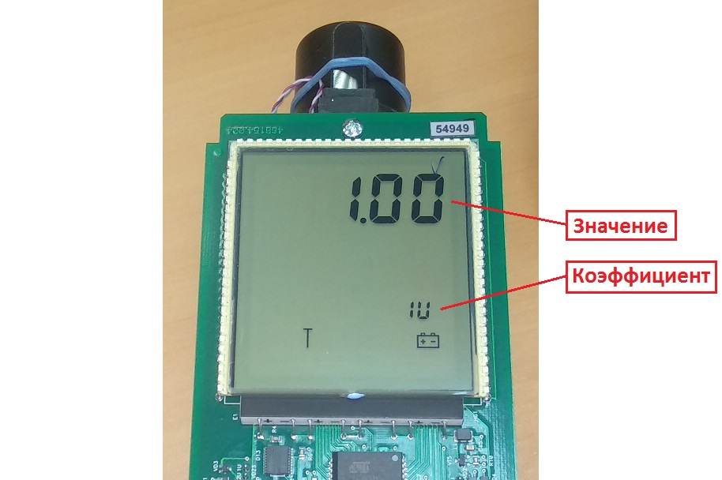

ДКС-АТ1123. Проверка коэффициентов
- При включении нажать и удерживать кнопку
- Нажать три раза , на экране появится "---":
- Два раза нажать кнопку
- Набрать "718", для этого с помощью клавиш и выбирается цифра, а с помощью выбирается следующая позиция
- После ввода последней цифры, нажать
- Нажать и удерживать кнопку , появится ".1."
- Нажимая кнопку , выбрать пятый режим
- Переключение коэффициента осуществляется кнопкой , значение коэффициента изменяется кнопками и 
Должны стоять такие коэффициенты:
| 1U | 1.0 |
| 2U | 1.0 |
| 3U | 1.0 |
| 4U | 0 |
| 5U | 0 |